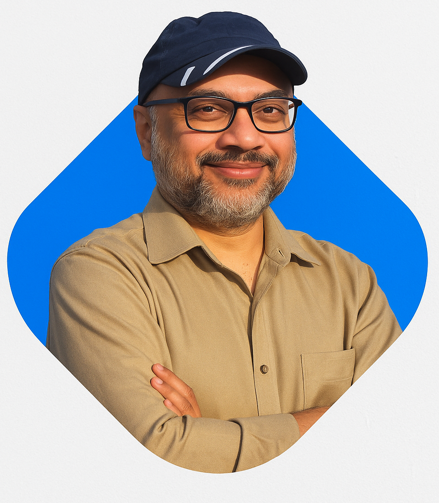

Afazur's Portfolio
Data Management · Data Analyst · Technical Analyst
Contact me
Mission/Vision
Results-driven IT support and data analytics professional with 12+ years of experience in technical support, troubleshooting, database analytics, and customer service. Proficient in Microsoft 365, SQL, Python, Tableau, ServiceNow, and Zoho Desk. Adept at problem-solving, networking, and reporting with a strong focus on customer satisfaction and efficiency. Holds a valid Nova Scotia driver’s license and is open to hybrid or on-site roles.
About
I’m Afazur Rahman, an IT support and data analytics professional with 12+ years of experience in troubleshooting, database reporting, and customer service. Skilled in Microsoft 365, SQL, Python, Tableau, and ServiceNow, I combine technical expertise with a customer-first mindset to solve problems efficiently. Currently pursuing an IT Database Administration diploma, I’m based in Dartmouth, NS, and open to hybrid or on-site opportunities where I can deliver both IT support and data-driven insights.
Experiences
I’ve had the opportunity to work across IT support, networking, and data reporting, where every role sharpened my ability to solve problems quickly and deliver practical solutions. From managing help desk tickets and setting up VPNs to building SQL reports and automating dashboards, my experience blends hands-on technical work with data-driven decision-making.
Location: Dartmouth, NS | Dates: Dec 2022 – May 2024
- Provided first-level IT support via Zoho Tcketng system, email, and phone for internal users
- Troubleshot hardware/software issues, printers, VPNs, and network connectons, reducing downtime
- Managed backup & imaging of PCs/laptops using Acronis Imaging software
- Created weekly “Tuesday Tech Tips” publications to improve IT awareness among employees
- Developed SQL-based reports and automated report scheduling using Qlik NPrinting & Crystal Reports
- Assisted in network installations, wiring, and troubleshooting to enhance company-wide connectivity
Location: Dhaka, Bangladesh | Dates: Nov 2016 – Apr 2022
- Provided IT support, troubleshooting, and system automation for the organization
- Analyzed large datasets using SPSS, SQL, and Python, improving research outcomes
- Designed and developed print-ready reports, brochures, and promotional materials
- Led communication with stakeholders, ensuring successful project completion
Location: Dartmouth, NS | Dates: Jun 2023 – Sep 2025
- Delivered exceptional customer service and technical sales in the flooring department
- Assisted customers in product selection, increasing sales volume and customer satisfaction.
- Awarded “Three Star” recognition under Home Depot’s “Superstar Award” program for excellent service.
Skills
I bring a balanced mix of technical expertise and problem-solving skills across IT support, data analytics, and system administration. My experience spans multiple platforms including Windows, Linux, and macOS, along with strong proficiency in Python, SQL, and web technologies. I enjoy automating tasks, creating efficient workflows, and continuously learning new tools to improve system performance and user experience.

Contact
Get in touch with me.
Address:
60, Primrose Street
Dartmouth, NS, B3A 4C8
Email